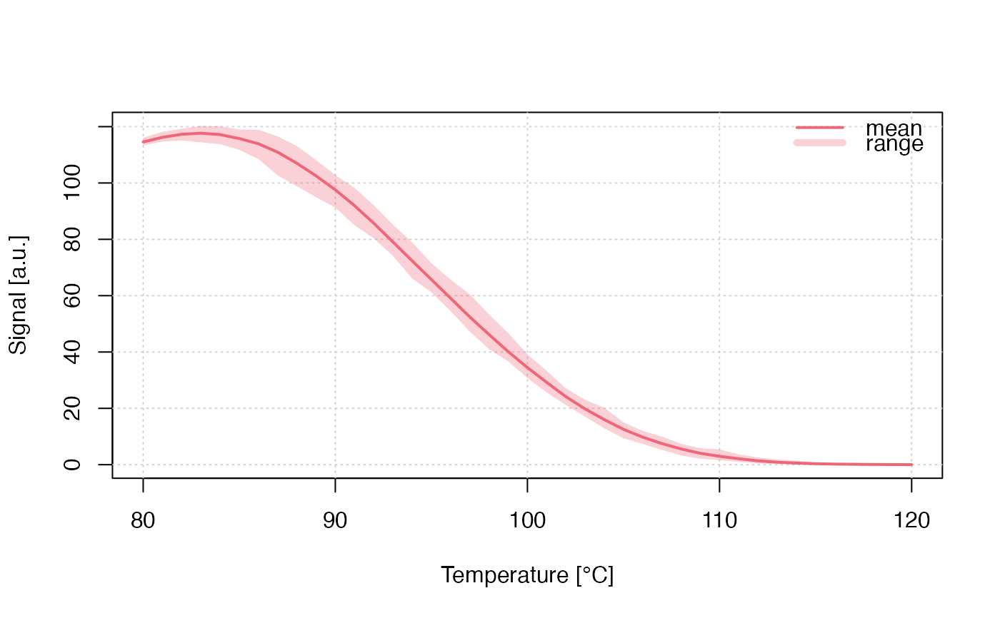

Run Monte-Carlo Simulation for TL (tunnelling transitions)
Source:R/run_MC_TL_TUN.R
run_MC_TL_TUN.RdRuns a Monte-Carlo (MC) simulation of thermoluminescence (TL) caused by tunnelling (TUN) transitions. Tunnelling refers to quantum mechanical tunnelling processes from the excited state of the trap into a recombination centre. The heating rate in this function is assumed to be 1 K/s.
Usage
run_MC_TL_TUN(
s,
E,
rho,
r_c = 0,
times,
b = 1,
clusters = 10,
N_e = 200,
delta.r = 0.1,
method = "par",
output = "signal",
...
)Arguments
- s
list (required): The effective frequency factor for the tunnelling process (s^-1)
- E
numeric (required): Thermal activation energy of the trap (eV)
- rho
numeric (required): The dimensionless density of recombination centres (defined as \(\rho\)' in Huntley 2006)
- r_c
numeric (with default): Critical distance (>0) that is to be used if the sample has been thermally and/or optically pretreated. This parameter expresses the fact that electron-hole pairs within a critical radius
r_chave already recombined.- times
numeric (required): The sequence of temperature steps within the simulation (s). The default heating rate is set to 1 K/s. The final temperature is
max(times) * b- b
numeric (with default): the heating rate in K/s
- clusters
numeric (with default): The number of created clusters for the MC runs. The input can be the output of create_ClusterSystem. In that case
n_filledindicate absolute numbers of a system.- N_e
numeric (with default): The total number of electron traps available (dimensionless). Can be a vector of
length(clusters), shorter values are recycled.- delta.r
numeric (with default): The increments of the dimensionless distance r'
- method
character (with default): Sequential
'seq'or parallel'par'processing. In the parallel mode the function tries to run the simulation on multiple CPU cores (if available) with a positive effect on the computation time.- output
character (with default): output is either the
'signal'(the default) or'remaining_e'(the remaining charges/electrons in the trap)- ...
further arguments, such as
coresto control the number of used CPU cores orverboseto silence the terminal
Value
This function returns an object of class RLumCarlo_Model_Output which
is a list consisting of an array with dimension length(times) x length(r) x clusters
and a numeric time vector.
Details
The model
$$ I_{TUN}(r',t) = -dn/dt = (s * exp(-E/(k_{B} * T))) * exp(-(\rho')^{-1/3} * r') * n(r',t) $$
Where in the function:
s := frequency for the tunnelling process (s^-1)
E := thermal activation energy (eV)
\(k_{B}\) := Boltzmann constant (8.617 x 10^-5 eV K^-1)
T := temperature (°C)
r' := the dimensionless tunnelling radius
\(\rho\)' := rho', the dimensionless density of recombination centres (see Huntley (2006))
t := time (s)
n := the instantaneous number of electrons at distance r'
How to cite
Friedrich, J., Kreutzer, S., 2025. run_MC_TL_TUN(): Run Monte-Carlo Simulation for TL (tunnelling transitions). Function version 0.1.0. In: Friedrich, J., Kreutzer, S., Pagonis, V., Schmidt, C., 2025. RLumCarlo: Monte-Carlo Methods for Simulating Luminescence Phenomena. R package version 0.1.10. https://r-lum.github.io/RLumCarlo/
References
Huntley, D.J., 2006. An explanation of the power-law decay of luminescence. Journal of Physics: Condensed Matter, 18(4), 1359.
Pagonis, V. and Kulp, C., 2017. Monte Carlo simulations of tunneling phenomena and nearest neighbor hopping mechanism in feldspars. Journal of Luminescence 181, 114–120. doi:10.1016/j.jlumin.2016.09.014
Pagonis, V., Friedrich, J., Discher, M., Müller-Kirschbaum, A., Schlosser, V., Kreutzer, S., Chen, R. and Schmidt, C., 2019. Excited state luminescence signals from a random distribution of defects: A new Monte Carlo simulation approach for feldspar. Journal of Luminescence 207, 266–272. doi:10.1016/j.jlumin.2018.11.024
Further reading
Aitken, M.J., 1985. Thermoluminescence dating. Academic Press.
Jain, M., Guralnik, B., Andersen, M.T., 2012. Stimulated luminescence emission from localized recombination in randomly distributed defects. Journal of Physics: Condensed Matter 24, 385402.
Author
Johannes Friedrich, University of Bayreuth (Germany), Sebastian Kreutzer, Geography & Earth Sciences, Aberystwyth University (United Kingdom)
Examples
## the short example
run_MC_TL_TUN(
s = 1e12,
E = 0.9,
rho = 1,
r_c = 0.1,
times = 80:120,
b = 1,
clusters = 50,
method = 'seq',
delta.r = 1e-1) %>%
plot_RLumCarlo()

if (FALSE) { # \dontrun{
## the long (meaningful example)
results <- run_MC_TL_TUN(
s = 1e12,
E = 0.9,
rho = 0.01,
r_c = 0.1,
times = 80:220,
clusters = 100,
method = 'par',
delta.r = 1e-1)
## plot
plot_RLumCarlo(results)
} # }